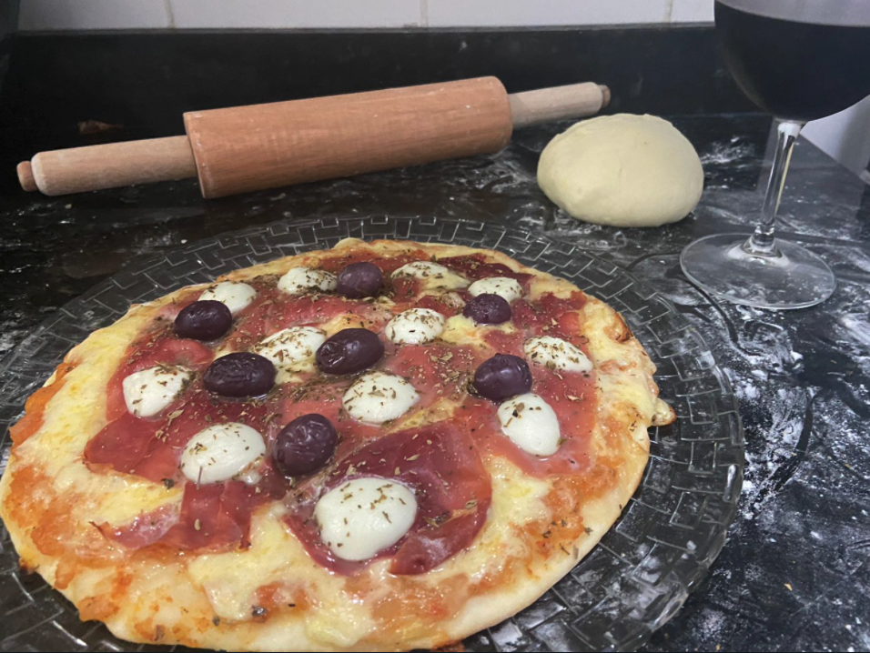
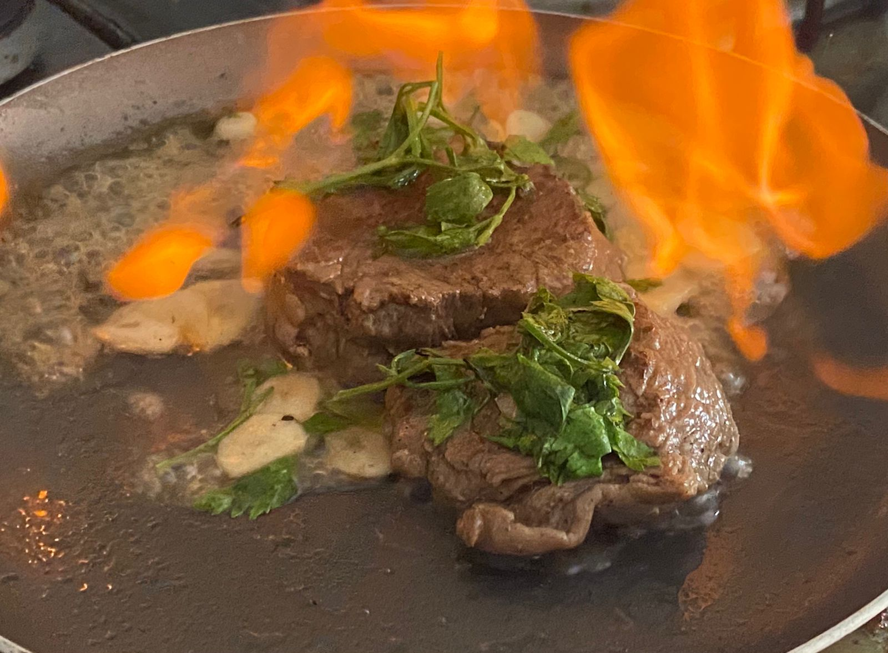
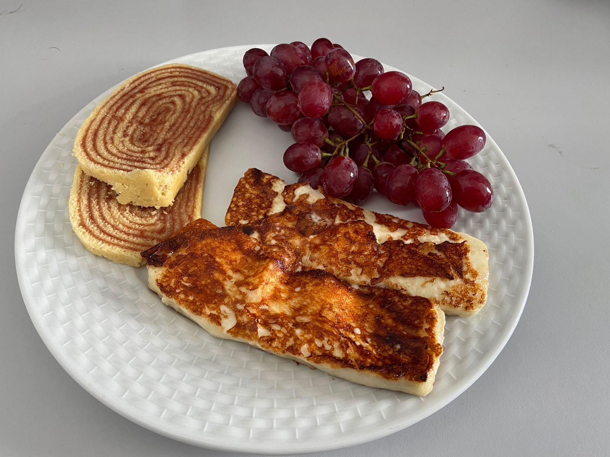

Pizza é uma preparação culinária que consiste em um disco de massa fermentada de farinha de trigo, coberto com molho de tomate e os ingredientes variados que normalmente incluem algum tipo de queijo, carnes preparadas ou defumadas e ervas, normalmente orégano ou manjericão, tudo assado em forno.
Para carnes assadas, nós recomendamos cebola, alho picado ou granulado, cebolinha, cominho, cravo-da-índia, gengibre ralado, pimenta calabresa ou chili, raiz forte para assados com molho, salsa, mostarda e tomilho. Para carnes grelhadas, alecrim, coentro e pimenta calabresa vão bem antes de levar ao fogo.
Essa iguaria surgiu como uma adaptação do bolo “Colchão de Noiva”, trazido pelos portugueses para o Brasil na época da colonização. Originalmente, o bolo era recheado com nozes e amêndoas; porém, devido à falta de ingredientes o recheio passou a ser feito com a brasileiríssima goiabada e caiu no gosto popular, claro!
